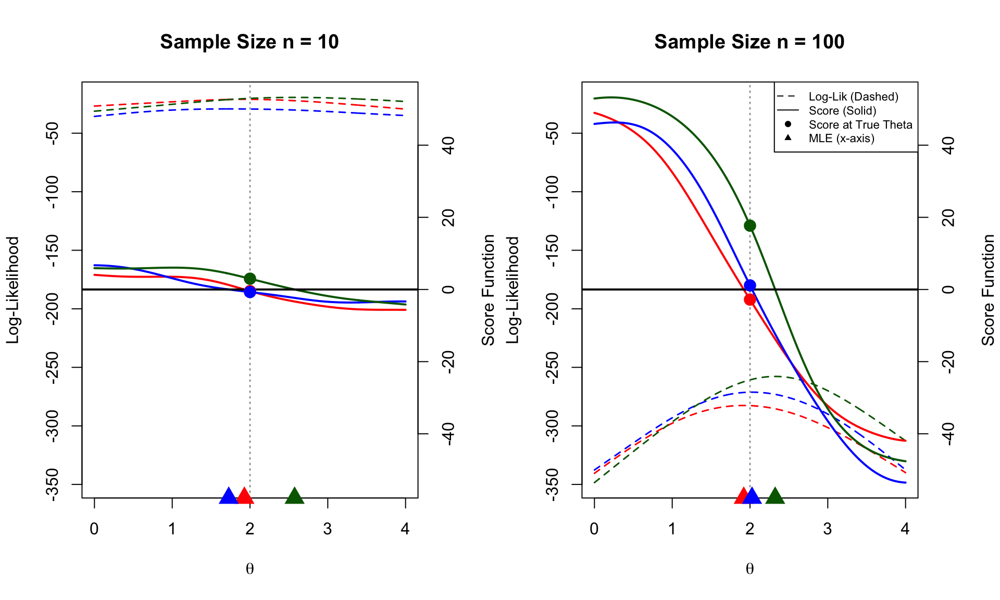

Code
# Parameters
set.seed(1)
theta_true <- 2 # True location parameter
n_sizes <- c(10, 100)
# Grid centered around theta_true
theta_grid <- seq(theta_true-2, theta_true+2, length.out = 300)
# Define functions for Cauchy (scale=1)
# Log Likelihood: sum( log( 1 / (pi * (1 + (x-theta)^2)) ) )
log_lik_fn <- function(theta, data) {
sum(dt(data - theta, df = 1, log = TRUE))
}
# Score Function: Gradient of log-likelihood
# d/d_theta [ -log(1 + (x-theta)^2) ] = 2(x-theta) / (1 + (x-theta)^2)
score_fn <- function(theta, data) {
sum( (2 * (data - theta)) / (1 + (data - theta)^2) )
}
# 1. Generate All Data First
data_list <- list()
for(n in n_sizes) {
# Generate 3 datasets per sample size (rcauchy)
data_list[[paste0("n", n)]] <- replicate(3, rcauchy(n, location = theta_true), simplify = FALSE)
}
# 2. Calculate Global Ranges for Consistent Axes
all_lik_vals <- c()
all_score_vals <- c()
for(n_key in names(data_list)) {
for(d in data_list[[n_key]]) {
all_lik_vals <- c(all_lik_vals, sapply(theta_grid, log_lik_fn, data=d))
all_score_vals <- c(all_score_vals, sapply(theta_grid, score_fn, data=d))
}
}
global_ylim_lik <- range(all_lik_vals)
global_ylim_score <- range(all_score_vals)
# Setup plot layout
par(mfrow = c(1, 2), mar = c(5, 4, 4, 4) + 0.1)
# Colors for the 3 datasets
cols <- c("red", "blue", "darkgreen")
# 3. Plot Loop
for (n in n_sizes) {
datasets <- data_list[[paste0("n", n)]]
# --- Plot A: Log-Likelihood (Left Axis) ---
# NOW DASHED (lty = 2)
plot(theta_grid, sapply(theta_grid, log_lik_fn, data=datasets[[1]]),
type = "l", col = cols[1], lwd = 1.5, lty = 2,
ylim = global_ylim_lik, # Global Range
ylab = "Log-Likelihood", xlab = expression(theta),
main = paste0("Sample Size n = ", n))
for(i in 2:3){
lines(theta_grid, sapply(theta_grid, log_lik_fn, data=datasets[[i]]),
col = cols[i], lwd = 1.5, lty = 2)
}
# Mark True Theta Line
abline(v = theta_true, col = "gray50", lwd = 1, lty=3)
# --- Plot B: Score Function (Right Axis) ---
par(new = TRUE)
# NOW SOLID (lty = 1)
plot(theta_grid, sapply(theta_grid, score_fn, data=datasets[[1]]),
type = "l", col = cols[1], lwd = 2, lty = 1,
axes = FALSE, xlab = "", ylab = "",
ylim = global_ylim_score) # Global Range
for(i in 2:3){
lines(theta_grid, sapply(theta_grid, score_fn, data=datasets[[i]]),
col = cols[i], lwd = 2, lty = 1)
}
# Right Axis
axis(4)
mtext("Score Function", side = 4, line = 3)
# Enhanced U=0 Line
abline(h = 0, col = "black", lwd = 2)
# Marks
for(i in 1:3){
# 1. Mark Score at True Theta (Bartlett check)
sc_val <- score_fn(theta_true, datasets[[i]])
points(theta_true, sc_val, pch = 19, col = cols[i], cex = 1.5)
# 2. Mark MLE on x-axis (Root finding)
# Numerical optimization needed for Cauchy MLE
mle_res <- optimize(f = function(th) log_lik_fn(th, datasets[[i]]),
interval = c(-10, 10), maximum = TRUE)
mle <- mle_res$maximum
# Place marker at bottom of plot
points(mle, par("usr")[3], pch = 17, col = cols[i], cex = 2, xpd = TRUE)
}
# Legend (Only on first plot)
if (n == n_sizes[2]) {
legend("topright",
legend = c("Log-Lik (Dashed)", "Score (Solid)", "Score at True Theta", "MLE (x-axis)"),
lty = c(2, 1, NA, NA),
pch = c(NA, NA, 19, 17),
col = "black", bg="white", cex=0.7)
}
}